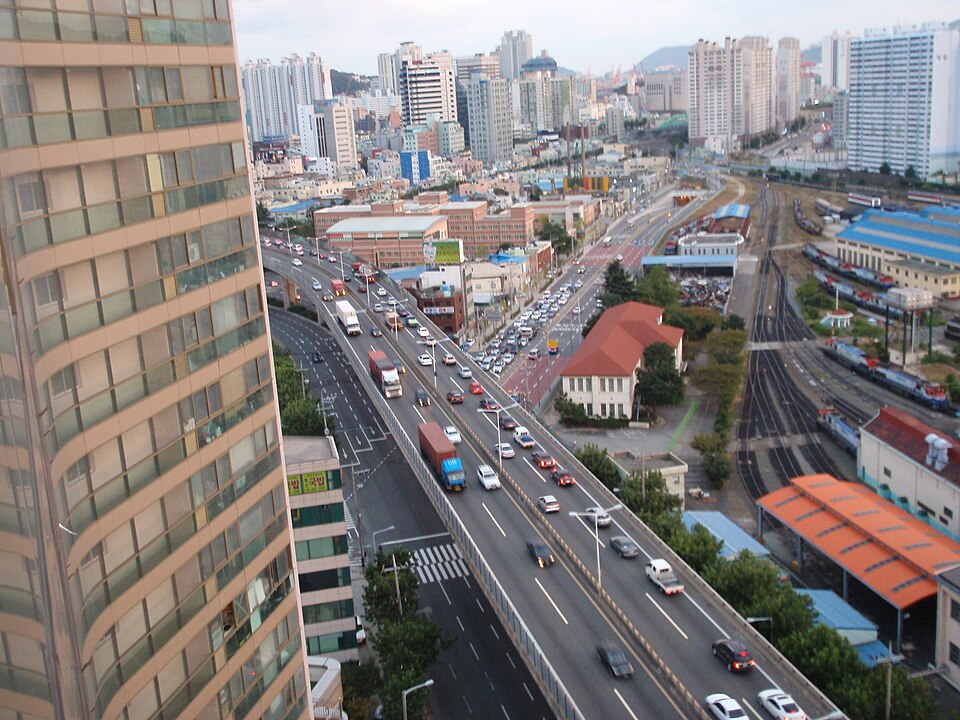

부산진구 검정고시 — 중졸 합격 뒤 고졸까지 쉬지 않고 이어 가기

중학교 과정부터 다시 해야 하는 분들이 있습니다. 중졸 검정고시에 합격해야 고졸 검정고시에 응시할 수 있으니 두 번을 치러야 하는데, 이걸 각각 따로 준비하면 실제로 걸리는 기간이 크게 늘어납니다. 부산진구(부산광역시 부산진구) 검정고시를 중졸부터 시작하실 때 두 단계를 어떻게 이어 붙이면 되는지 정리했습니다.
중졸과 고졸을 따로 떼어 놓지 않습니다
가장 흔한 길은 이렇습니다. 중졸만 보고 공부해서 합격하고, 한숨 돌린 뒤 몇 달 지나 고졸을 다시 시작합니다. 그런데 다시 책을 펴 보면 중졸 때 쌓아 둔 게 상당히 빠져 있습니다. 결국 앞부분을 또 한 번 훑게 되고, 그 시간이 통째로 더 들어갑니다.
중졸과 고졸은 같은 과목 이름을 쓰고 내용이 이어집니다. 중졸 때 잡아 둔 기초가 고졸에서 그대로 쓰인다는 뜻입니다. 그래서 처음 계획을 짤 때부터 "중졸 합격"이 아니라 "고졸 합격"을 끝점으로 놓고 중졸을 그 중간 지점으로 잡는 편이 낫습니다. 같은 공부를 하면서도 머릿속에 남는 게 달라집니다.
중졸 때 깊게 파 둘 과목, 가볍게 넘길 과목
두 단계를 이어서 본다면 중졸 단계에서 힘을 어디에 쓸지가 달라집니다.
영어와 수학은 중졸 때 욕심내서 잡아 둡니다. 이 두 과목은 앞을 모르면 뒤가 안 되는 구조라, 중졸 범위를 어설프게 넘기면 고졸에서 반드시 다시 막힙니다. 중졸 합격선만 겨우 넘기는 수준으로 통과하면 고졸에서 두 배로 고생합니다.
반대로 암기 비중이 큰 과목은 중졸 때 과하게 붙들 필요가 없습니다. 사회·한국사처럼 내용을 외워서 푸는 과목은 고졸에서 범위가 새로 넓어지므로, 중졸 때 외운 것이 그대로 쓰이기보다 그때 다시 정리하게 되는 경우가 많습니다. 중졸 단계에서는 흐름만 잡고 넘어가도 됩니다.
합격 발표 뒤 한 달이 제일 중요합니다
중졸에 붙고 나면 당연히 쉬고 싶어집니다. 그런데 이 시기에 완전히 손을 놓으면 그동안 만들어 둔 공부 습관이 먼저 사라집니다. 지식보다 습관이 먼저 무너진다는 게 핵심입니다.
그래서 합격 직후에는 분량을 확 줄이되 끊지는 않기를 권합니다. 하루 30분, 영어 단어와 수학 한 문제 정도면 충분합니다. 쉬는 기분은 나면서 책상 앞에 앉는 일은 유지됩니다. 그러고 나서 고졸 범위를 펼치면 "처음부터 다시"가 아니라 "이어서"가 됩니다.
고졸에서 새로 생기는 것만 따로 챙깁니다
고졸 과정에서는 중졸에 없던 과목이 더해지고 선택과목을 고르게 됩니다. 이 부분은 이어지는 내용이 아니라 새로 시작하는 영역이라, 중졸에서 넘어오자마자 한꺼번에 몰아 붙이지 말고 따로 자리를 잡아 다루는 편이 안전합니다.
검정고시는 전 과목 평균 60점이면 합격이고, 과목별로 나눠 치를 수도 있습니다. 새로 생긴 과목을 첫 회차에 전부 끌고 갈 필요는 없다는 뜻입니다. 자세한 응시 과목과 시험 일정은 뉴스 첫 화면의 일정 안내를 확인해 주세요.
부산진구에서 이렇게 함께합니다
저희는 1:1 맞춤 과외라 중졸·고졸을 따로 끊어 가르치지 않고, 처음 상담에서 고졸까지의 전체 기간을 함께 잡습니다. 부전동·전포동·양정동·연지동·초읍동·당감동·가야동·개금동·범천동 등 부산진구 전 지역에서 방문 수업이 가능하고, 일정이 들쭉날쭉하거나 이동이 부담스러우면 화상(줌) 수업으로 요일을 지켜 갑니다.
관련 검색어: 부산진구검정고시 · 부산진구검정고시과외 · 부산진검정고시과외 · 부산부산진구검정고시 · 부산진구성인과외